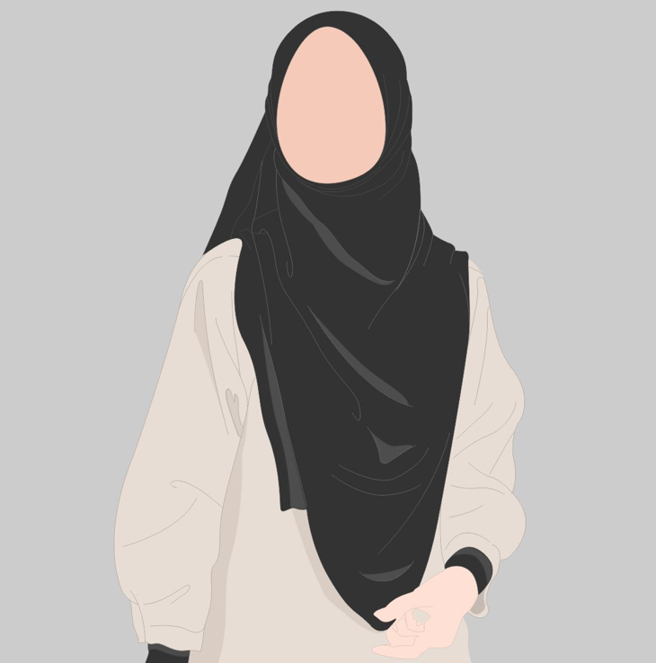

About me
I am Shqiponje Vitija, 29 years old. I am from Gjilan. Married and mother of two girls.
Bachelor in the Faculty of Electrical and Computer Engineering, Department of
Telecommunications.Currently, the second year of Master's studies in the department of Information and
CommunicationTechnology(ICT).
I have not yet practiced as an engineer, but I have gained valuable experience through various training programs
and internships with different companies, example there is:
PBC Academy,Post and Telecommunication of Kosovo and 3CIS.
In my personal life, I have honed my time management skills by successfully balancing as Mother job and pursuing
a part-time master's degree.
I've learned to create detailed schedules, prioritize tasks, and efficiently allocate my time to exams deadlines
and complete coursework.
This skill has allowed me to excel in both my family's life and education.
One of my personal strengths is empathy.
One of my favorite hobbies is photography. I enjoy capturing moments and scenes that tell a story or evoke
emotions.
Whether it's photographing landscapes during a nature hike or candid shots of friends and family at gatherings.
Reading is not just a hobby but a lifelong passion of mine. Whether it's getting lost in the pages of a gripping
novel, exploring the depths of non-fiction, or staying updated with the latest articles and research in my
field, reading has been an integral part of my life.
It's a gateway to different worlds, perspectives, and knowledge.
Education
- Primary School:
- SHFMU "Abaz Ajeti"(2001-2009)
- High School :
- Gjimnazi "Zenel Hajdini" (2010-2012)
- University:
- Bachelor of Science in Telecommunication Faculty of Electrical and Computer Engineering, University of Prishtina (2012-2016)
- Master of Information and Communication Technology in Faculty of Electrical and Computer Engineering, University of Prishtina (Current)
My Skills
| # | English Language | Mathematics | HTML5 | IoT | SOFTWARE DEFINED RADIO |
|---|---|---|---|---|---|
| Rating | 8.0 | 8.0 | 7.0 | 10.0 | 8.0 |
My Projects
- Servo distance indicator→Read More
- Digital ruler with a Raspberry Pi board→Read More
- Ultrasonic security system→Read More